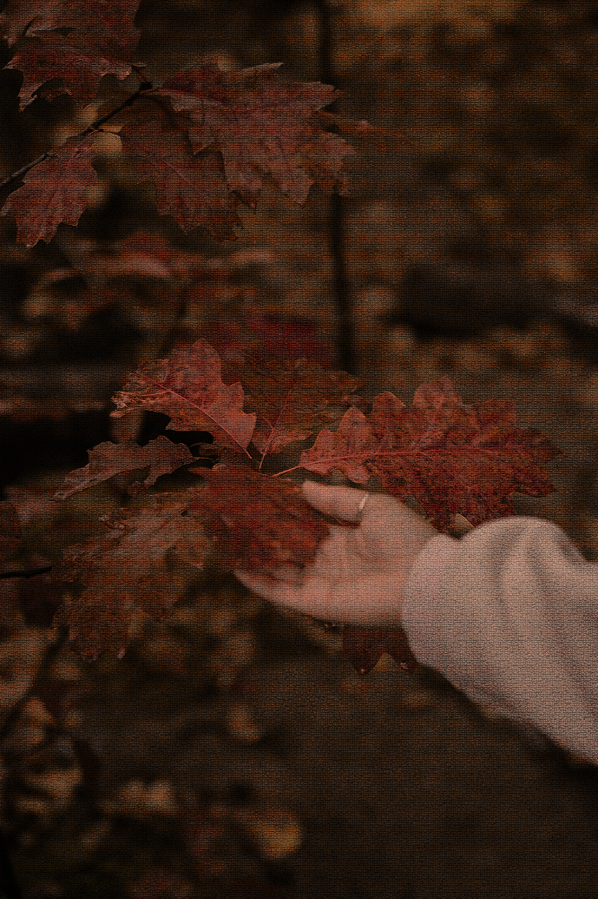
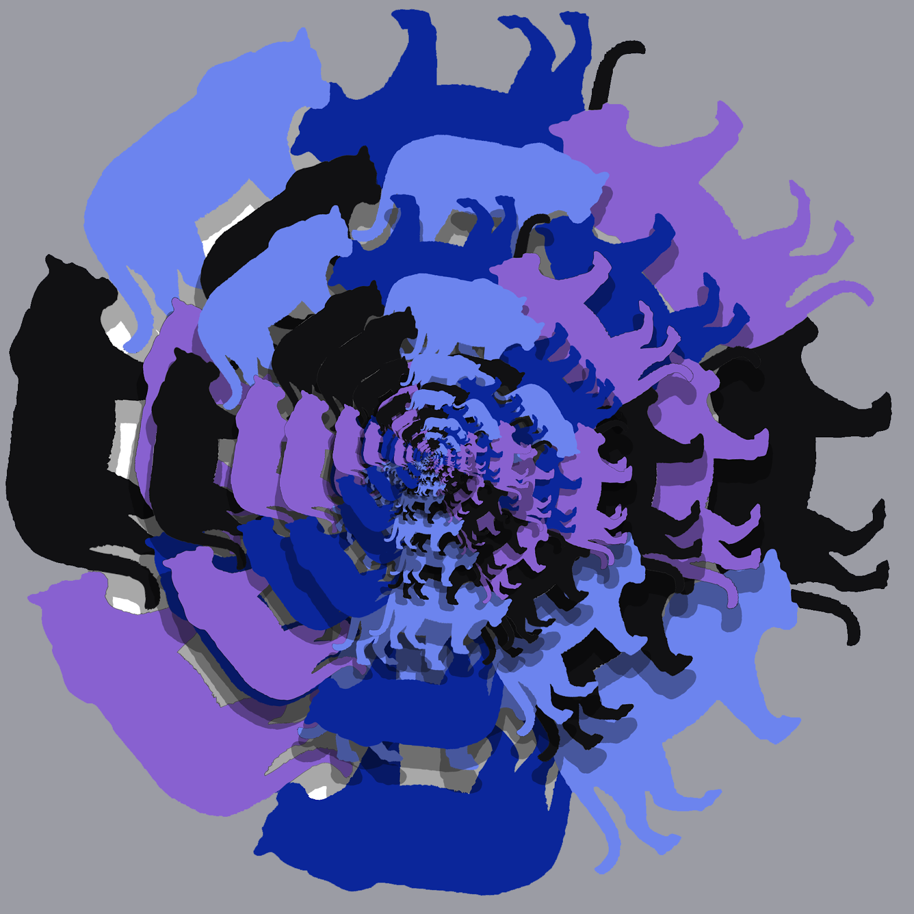

This is my website!
Filters and Adjustments Transformation:
I made this project by using the app of adobe photoshop as a primary tool. I had many steps in the making of this project, I had to get the image from pixels and it has to do with october. The original picture does not look anything similar to the picture that ended up looking like.
Mandalas:
I made this project using photoshop 2022 as a primary tool. There were many steps to achieve this Mandala but one of them was to choose a shape, for example an animal or a flower. I chose a tiger as my shape. I wanted purple so I used different shades of purples as the color. Another step was to duplicate and merge the shapes to give it a patter. After I duplicated more than 4 times, it became like a puzzle, because there was a pattern that looked really good.
Whats My Vibe Project:

I used the program adobe express to make this project. The tools that I used were google and my imagination. I started by thinking about 6 words that described me and getting a picture for each and one of them. I thought about my hobbies and favorite color which is brown. I used pictures that were the same color and the same vibe next to each other. I included more than six pictures that represented the same word twice. I believe that my college reflects my aesthetic because it's everything that inspires me and every day things I do.